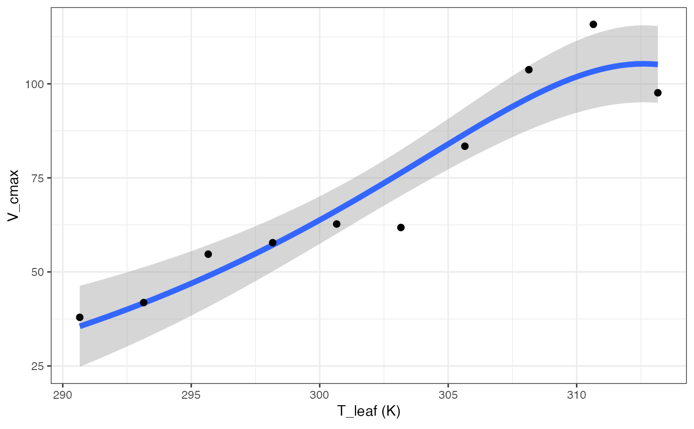
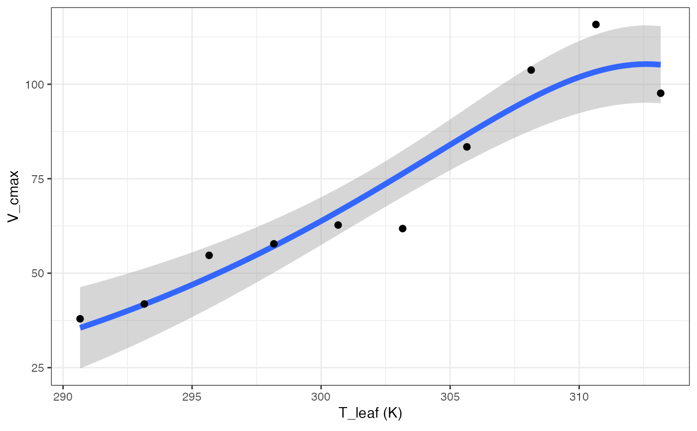
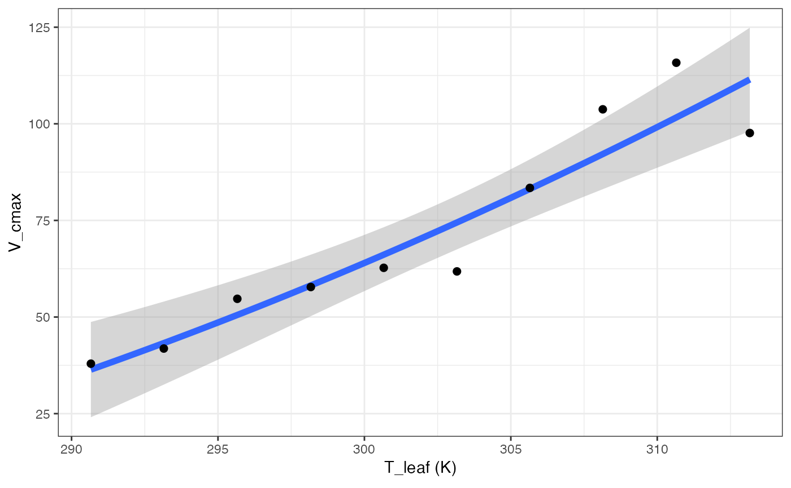
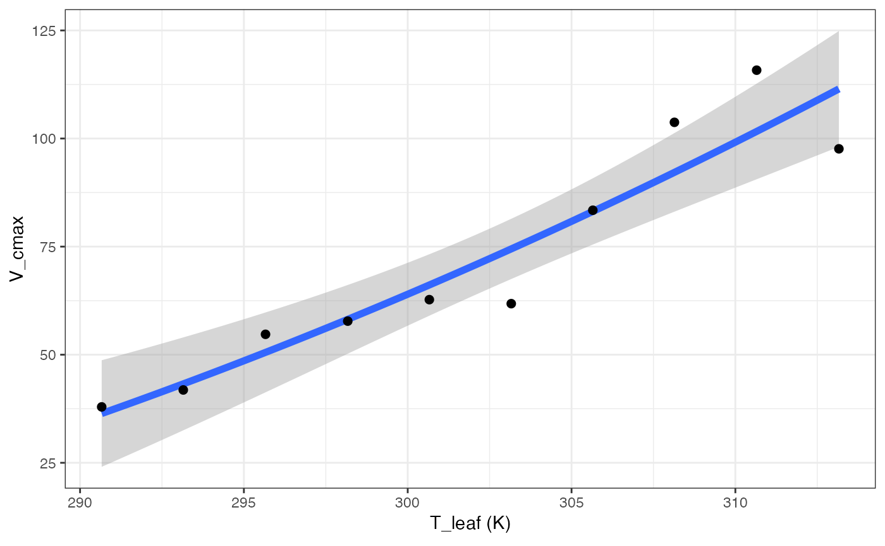

Fitting temperature responses
fit_t_response(
data,
varnames = list(Par = "Par", T_leaf = "T_leaf"),
model = c("Arrhenius", "Kruse", "Heskel", "Medlyn", "MMRT", "Quadratic", "Topt"),
start = list(a = 1, b = 1, c = 1, dEa = 1, Ea_ref = 1, Par_ref = 1, Ea = 40000, Par25 =
50, Hd = 2e+05, dS = 650, dCp = 1, dG = 1, dH = 1),
setvar = "none",
hdset = 2e+05,
dSset = 650,
title = NULL,
...
)Arguments
- data
Dataframe with temperature response variables
- varnames
Variable names, where Par is the parameter of interest, and T_leaf is the leaf temperature in K.
- model
Which temperature response model do you want to use? Defaults to all: Arrhenius, Heskel, Kruse, Medlyn, MMRT, Quadratic, and Topt.
- start
List of starting parameters for the nls model fits. a, b, and c are needed for the Heskel model, dEa, Ea_ref, and Par_ref are needed for the Kruse model, Ea, Par25, and Hd are all needed for the Medlyn and Topt models while the Medlyn model also requires dS, and dCP, dG, and dH are all for the MMRT model.
- setvar
Which variable to set as constant for the Medlyn model? Defaults to "none", while "Hd" and "dS" options are available.
- hdset
Which value should Hd be set to when setvar = "Hd"? Specify in J/mol.
- dSset
Which value should dS be set to when setvar = "dS"? Specify in J/mol/K.
- title
Title of output graphs
- ...
Further arguments to pass on to the nlsLM() function
Value
fit_t_response fits one or more temperature response models to a dataset, returning a list of lists. The parent list contains the models, while the child list for each model contains the fitted model in element 1, the coefficients in element 2, and a graph in element 3.
References
Arrhenius S. 1915. Quantitative laws in biological chemistry. Bell.
Heskel MA, O'Sullivan OS, Reich PB, Tjoelker MG, Weerasinghe LK, Penillard A, Egerton JJG, Creek D, Bloomfield KJ, Xiang J, Sinca F, Stangl ZR, la Torre AM, Griffin KL, Huntingford C, Hurry V, Meir P, Turnbull MH, Atkin OK. 2016. Convergence in the temperature response of leaf respiration across biomes and plant functional types. PNAS 113:3832-3837
Hobbs JK, Jiao W, Easter AD, Parker EJ, Schipper LA, Arcus VL. 2013. Change in heat capacity for enzyme catalysis determines temperature dependence of enzyme catalyzed rates. ACS Chemical Biology 8:2388-2393.
Kruse J, Adams MA. 2008. Three parameters comprehensively describe the temperature response of respiratory oxygen reduction. Plant Cell Environ 31:954-967
Liang LL, Arcus VL, Heskel MA, O'Sullivan OS, Weerasinghe LK, Creek D, Egerton JJG, Tjoelker MG, Atkin OK, Schipper LA. 2018. Macromolecular rate theory (MMRT) provides a thermodynamics rationale to underpin the convergent temperature response in plant leaf respiration. Glob Chang Biol 24:1538-1547
Medlyn BE, Dreyer E, Ellsworth D, Forstreuter M, Harley PC, Kirschbaum MUF, Le Roux X, Montpied P, Strassemeyer J, Walcroft A, Wang K, Loutstau D. 2002. Temperature response of parameters of a biochemically based model of photosynthesis. II. A review of experimental data. Plant Cell Environ 25:1167-1179
Examples
# \donttest{
# Read in data
data <- read.csv(system.file("extdata", "A_Ci_T_data.csv",
package = "photosynthesis"
),
stringsAsFactors = FALSE
)
library(tidyr)
#>
#> Attaching package: ‘tidyr’
#> The following object is masked from ‘package:magrittr’:
#>
#> extract
# Round temperatures to group them appropriately
# Use sequential rounding
data$T2 <- round(data$Tleaf, 1)
data$T2 <- round(data$Tleaf, 0)
# Look at unique values to detect rounding issues
unique(data$T2)
#> [1] 17 18 20 22 23 25 28 27 30 33 32 35 37 38 40
# Some still did not round correctly,
# manually correct
for (i in 1:nrow(data)) {
if (data$T2[i] == 18) {
data$T2[i] <- 17
}
if (data$T2[i] == 23) {
data$T2[i] <- 22
}
if (data$T2[i] == 28) {
data$T2[i] <- 27
}
if (data$T2[i] == 33) {
data$T2[i] <- 32
}
if (data$T2[i] == 38) {
data$T2[i] <- 37
}
}
# Make sure it is a character string for grouping
data$T2 <- as.character(data$T2)
# Create grouping variable by ID and measurement temperature
data <- unite(data,
col = "ID2", c("ID", "T2"),
sep = "_"
)
# Split by temperature group
data <- split(data, data$ID2)
# Obtain mean temperature for group so temperature
# response fitting is acceptable later, round to
# 2 decimal places
for (i in 1:length(data)) {
data[[i]]$Curve_Tleaf <- round(mean(data[[i]]$Tleaf), 2)
}
# Convert from list back to dataframe
data <- do.call("rbind", data)
# Parse grouping variable by ID and measurement temperature
data <- separate(data,
col = "ID2", into = c("ID", "T2"),
sep = "_"
)
# Make sure number of values matches number of measurement
# temperatures. May vary slightly if plants had slightly
# different leaf temperatures during the measurements
unique(data$Curve_Tleaf)
#> [1] 17.51 20.01 22.50 25.01 27.51 30.01 32.50 34.99 37.50 39.99 20.00 22.51
#> [13] 25.02 40.01
# Create ID column to curve fit by ID and temperature
data <- unite(data,
col = "ID2", c("ID", "Curve_Tleaf"),
sep = "_"
)
# Convert leaf temperature to K
data$T_leaf <- data$Tleaf + 273.15
# Fit many CO2 response curves
fits2 <- fit_many(
data = data,
group = "ID2",
varnames = list(
A_net = "A",
C_i = "Ci",
T_leaf = "T_leaf",
PPFD = "Qin",
g_mc = "g_mc"
),
funct = fit_aci_response,
alphag = 0
)
#>
|
| | 0%
|
|==== | 5%
|
|======= | 10%
|
|========== | 15%
|
|============== | 20%
|
|================== | 25%
|
|===================== | 30%
|
|======================== | 35%
|
|============================ | 40%
|
|================================ | 45%
|
|=================================== | 50%
|
|====================================== | 55%
|
|========================================== | 60%
|
|============================================== | 65%
|
|================================================= | 70%
|
|==================================================== | 75%
|
|======================================================== | 80%
|
|============================================================ | 85%
|
|=============================================================== | 90%
|
|================================================================== | 95%
|
|======================================================================| 100%
# Extract ACi parameters
pars <- compile_data(fits2,
output_type = "dataframe",
list_element = 1
)
# Extract ACi graphs
graphs <- compile_data(fits2,
output_type = "list",
list_element = 2
)
# Parse the ID variable
pars <- separate(pars, col = "ID", into = c("ID", "Curve_Tleaf"), sep = "_")
# Make sure curve leaf temperature is numeric
pars$Curve_Tleaf <- as.numeric(pars$Curve_Tleaf)
pars$T_leaf <- pars$Curve_Tleaf + 273.15
# Fit all models, set Hd to constant in Medlyn model
out <- fit_t_response(
data = pars[pars$ID == "S2", ],
varnames = list(
Par = "V_cmax",
T_leaf = "T_leaf"
),
setvar = "Hd",
hdset = 200000
)
#> Warning: NAs introduced by coercion
#> Warning: NAs introduced by coercion
#> Warning: NAs introduced by coercion
#> Warning: NAs introduced by coercion
#> Warning: NAs introduced by coercion
#> Warning: NAs introduced by coercion
#> Warning: NAs introduced by coercion
#> Warning: NAs introduced by coercion
#> Warning: NAs introduced by coercion
out[["Arrhenius"]][["Graph"]]
 out[["Heskel"]][["Graph"]]
out[["Heskel"]][["Graph"]]
 out[["Kruse"]][["Graph"]]
out[["Medlyn"]][["Graph"]]

out[["MMRT"]][["Graph"]]
out[["Kruse"]][["Graph"]]
out[["Medlyn"]][["Graph"]]

out[["MMRT"]][["Graph"]]
 out[["Quadratic"]][["Graph"]]

out[["Topt"]][["Graph"]]
out[["Quadratic"]][["Graph"]]

out[["Topt"]][["Graph"]]
 # }
# }